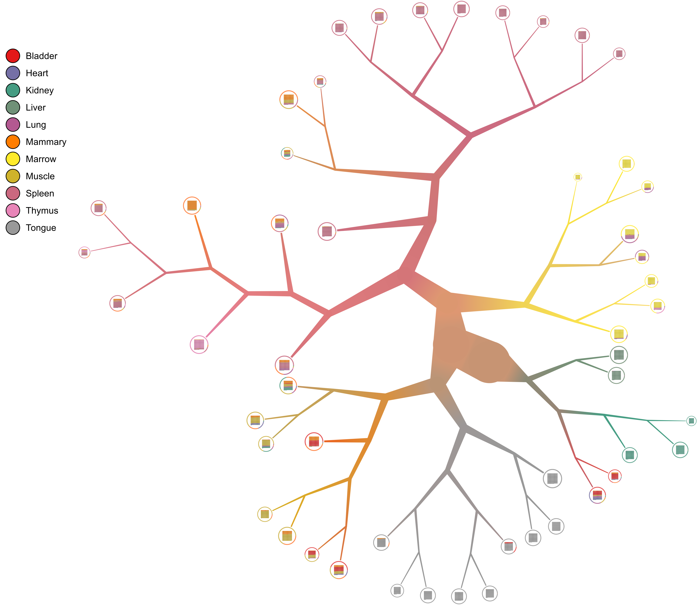
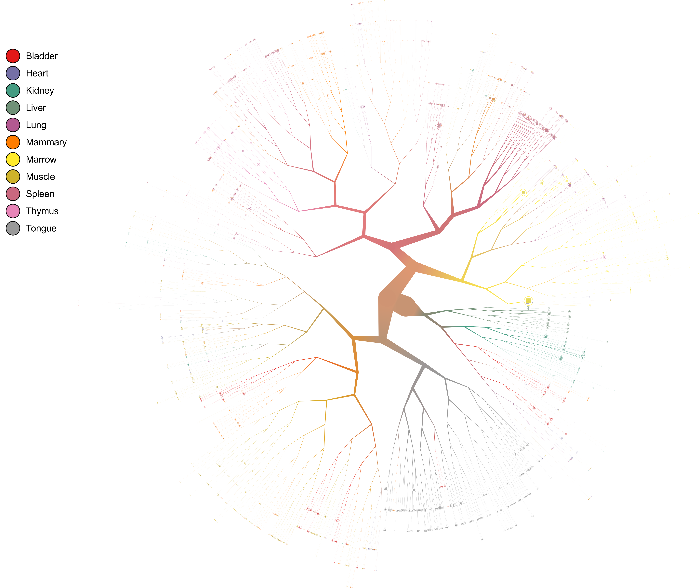
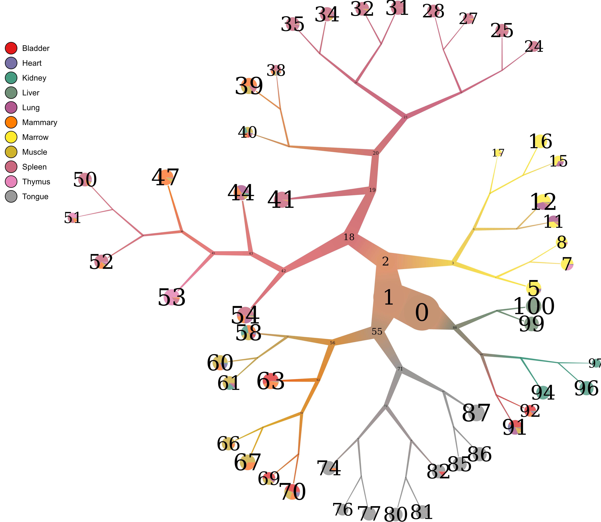
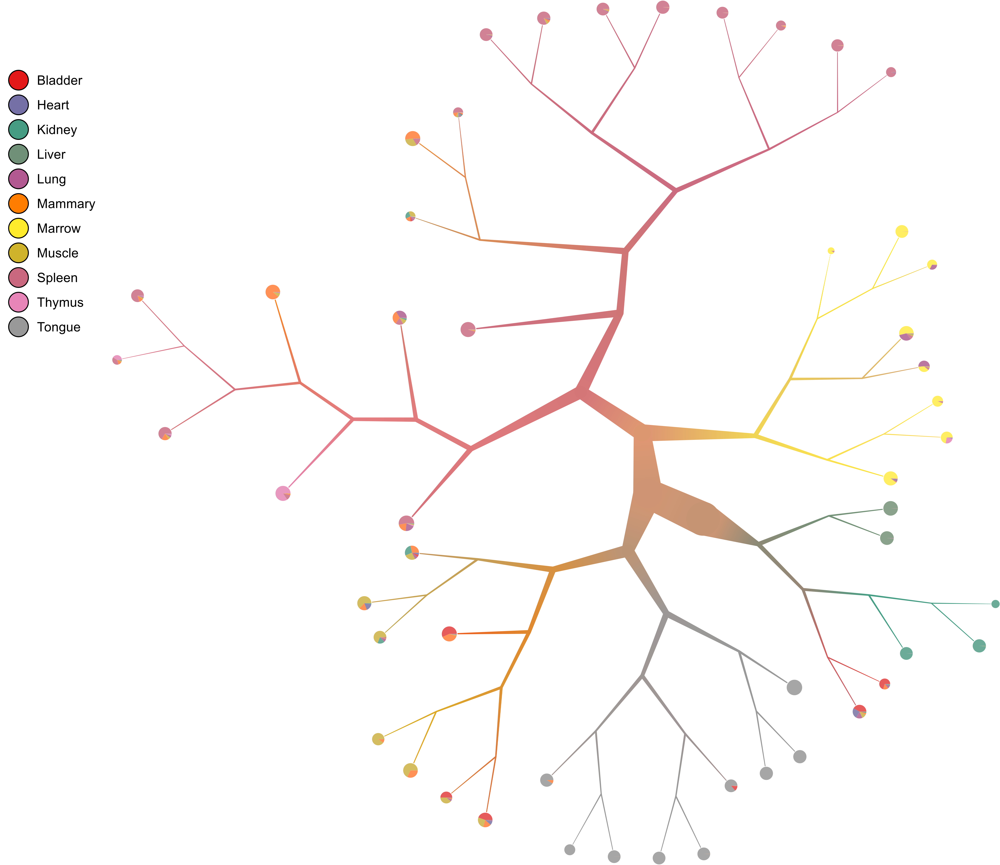
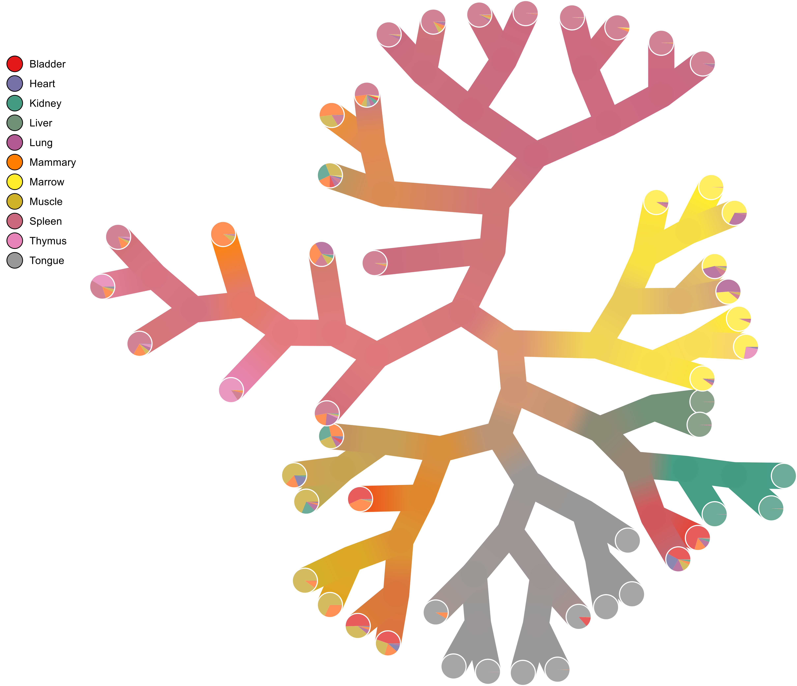
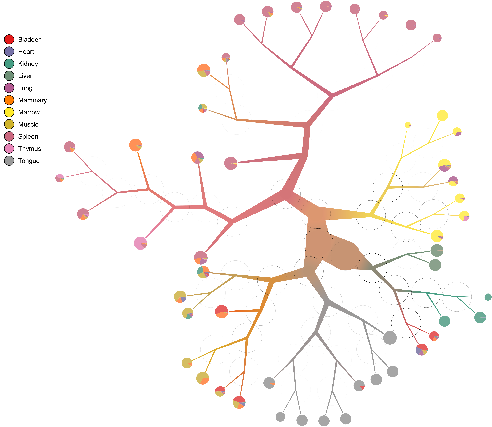
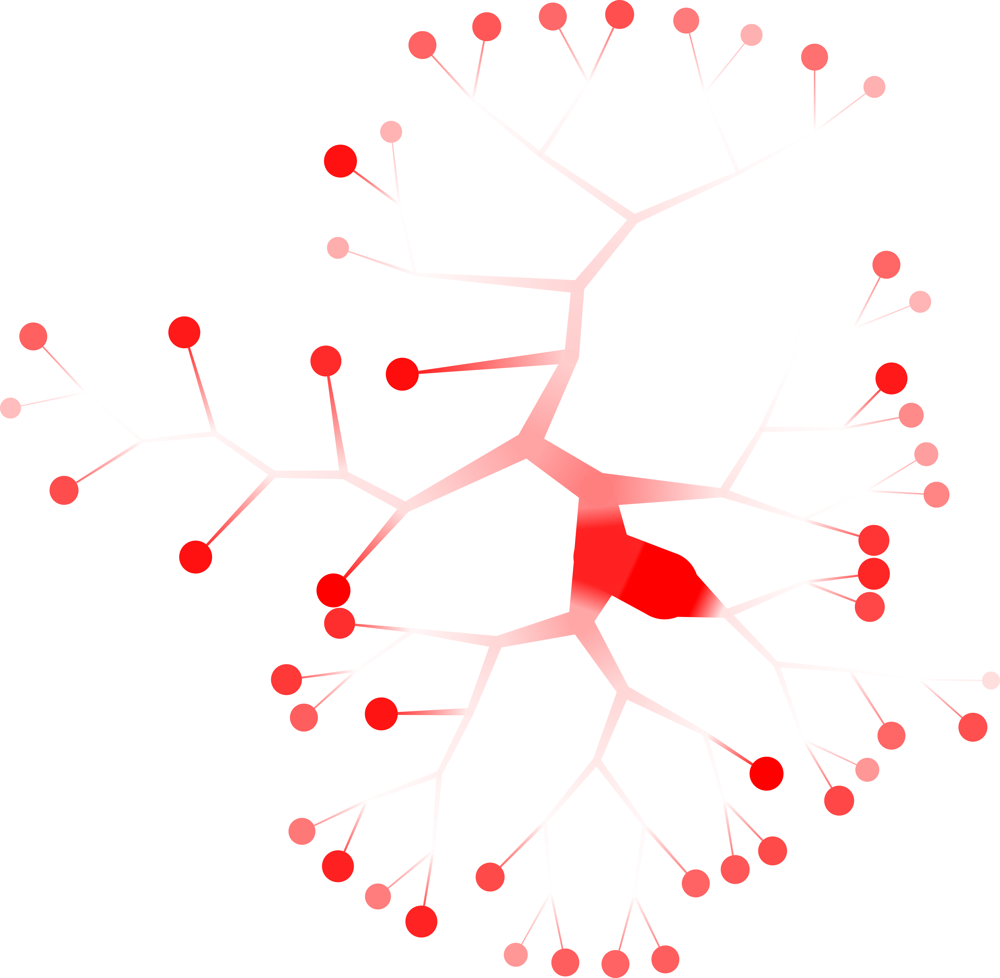

too-many-cells
Table of Contents
See https://github.com/GregorySchwartz/too-many-cells for latest version.

1 Description
too-many-cells is a suite of tools, algorithms, and visualizations focusing on
the relationships between cell clades. This includes new ways of clustering,
plotting, choosing differential expression comparisons, and more! While
too-many-cells was intended for single cell RNA-seq, any abundance data in any
domain can be used. Rather than opt for a unique positioning of each cell using
dimensionality reduction approaches like t-SNE and PCA, too-many-cells
recursively divides cells into clusters and relates clusters rather than
individual cells. In fact, by recursively dividing until further dividing would
be considered noise or random partitioning, we can eliminate noisy relationships
at the fine-grain level. The resulting binary tree serves as a basis for a
different perspective of single cells, using our birch-beer visualization
and tree measures to describe simultaneously large and small populations,
without additional parameters or runs. See below for a full list of features.
2 Installation
We provide multiple ways to install too-many-cells. We recommend installing
stack (see below), but we also have docker images and a Dockerfile to use in
any system in case you have a custom build (for instance, a non-standard R
installation) or difficulty installing.
2.1 Dependencies
You may require the following dependencies to build and run (from Ubuntu 14.04, use the appropriate packages from your distribution of choice):
- build-essential
- libgmp-dev
- libblas-dev
- liblapack-dev
- libgsl-dev
- libgtk2.0-dev
- libcairo2-dev
- libpango1.0-dev
- graphviz
- r-base
- r-base-dev
Uses the following packages from R:
- cowplot
- ggplot2
- edgeR
- jsonlite
2.2 Install stack
See https://docs.haskellstack.org/en/stable/README/ for more details.
curl -sSL https://get.haskellstack.org/ | sh stack setup
2.3 Install too-many-cells
2.3.1 Source
Probably the easiest method if you don't want to mess with dependencies (outside of the ones above).
git clone https://github.com/GregorySchwartz/too-many-cells.git
cd too-many-cells
stack install
2.3.2 Online
We only require stack (or cabal), you do not need to download any source
code (but you might need the stack.yaml dependency versions), just run the
following command to place too-many-cells in your ~/.local/bin/:
stack install too-many-cells
If you run into errors like Error: While constructing the build plan, the
following exceptions were encountered:, then follow it's advice. Usually you
just need to follow the suggestion and add the dependencies to the specified
file. For a quick yaml configuration, refer to
https://github.com/GregorySchwartz/too-many-cells/blob/master/stack.yaml. Relies
on eigen-3.3.4.1 right now.
2.3.3 Docker
Different computers have different setups, operating systems, and repositories.
Do put the entire program in a container to bypass difficulties (with the other
methods above), we user docker. So first, install docker.
To get too-many-cells (replace 0.1.0.0 with any version needed):
docker pull gregoryschwartz/too-many-cells:0.1.0.0
To run too-many-cells in a docker container:
sudo docker run gregoryschwartz/too-many-cells:0.1.0.0 -h
To build the too-many-cells image yourself if you want:
git clone https://github.com/GregorySchwartz/too-many-cells.git
cd too-many-cells
docker build -t too-many-cells -f ./Dockerfile .
3 Included projects
This project is a collection of libraries and programs written specifically for
too-many-cells:
-
birch-beer - Generate a tree for displaying a hierarchy of groups with colors, scaling, and more.
-
modularity - Find the modularity of a network.
-
spectral-clustering - Library for spectral clustering.
-
hierarchical-spectral-clustering - Hierarchical spectral clustering of a graph.
-
differential - Finds out whether an entity comes from different distributions (statuses).
4 Usage
too-many-cells has several entry points depending on the desired analysis.
| Argument | Analysis |
|---|---|
make-tree |
Generate the tree from single cell data with various measurement outputs and visualize tree |
interactive |
Interactive visuzalization of the tree, very slow |
differential |
Find differentially expressed genes between two nodes |
diversity |
Conduct diversity analyses of multiple cell populations |
paths |
The binary tree equivalent of the so called "pseudotime", or 1D dimensionality reduction |
The main workflow is to first generate and plot the population tree using
too-many-cells make-tree, then use the rest of the entry points as needed.
At any point, use -h to see the help of each entry point.
4.1 make-tree
too-many-cells make-tree generates a binary tree using hierarchical spectral
clustering. We start with all cells in a single node. Spectral clustering
partitions the cells into two groups. We assess the clustering using
Newman-Girvan modularity: if \(Q > 0\) then we recursively continue with
hierarchical spectral clustering. If not, then there is only a single community
and we do not partition – the resulting node is a leaf and is considered the
finest-grain cluster.
The most important argument is the --prior argument. Making the tree may
take some time, so if the tree was already generated and other analysis or
visualizations need to be run on the tree, point the --prior argument to the
output folder from a previous run of too-many-cells. If you do not use
--prior, the entire tree will be recalculated even if you just wanted to
change the visualization!
The main input is the --matrix-path argument. When a directory is supplied,
too-many-cells interprets the folder to have matrix.mtx, genes.tsv, and
barcodes.tsv files (cellranger outputs, see cellranger for specifics). If
a file is supplied instead of a directory, we assume a csv file containing
gene row names and cell column names. This argument can be called multiple times
to combine multiple single cell matrices: --matrix-path input1 --matrix-path
input2.
The second most important argument is --labels-file. Supply with a csv with
a format and header of "item,label" to provide colorings and statistics of the
relationships between labels. Here the "item" column contains the name of each
cell (barcode) and the label is any property of the cell (the tissue of origin,
hour in a time course, celltype, etc.).
To see the full list of options, use too-many-cells -h and -h for each entry
point (i.e. too-many-cells make-tree -h).
4.1.1 Output
too-many-cells make-tree generates several files in the output folder. Below
is a short description of each file.
| File | Description |
|---|---|
clumpiness.csv |
When labels are provided, uses the clumpiness measure to determine the level of aggregation between each label within the tree. |
clumpiness.pdf |
When labels are provided, a figure of the clumpiness between labels. |
cluster_diversity.csv |
When labels are provided, the diversity, or "effective number of labels", of each cluster. |
cluster_info.csv |
Various bits of information for each cluster and the path leading up to each cluster, from that cluster to the root. For instance, the size column has cluster_size/parent_size/parent_parent_size/.../root_size |
cluster_list.json |
The json file containing a list of clusterings. |
cluster_tree.json |
The json file containing the output tree in a recursive format. |
dendrogram.svg |
The visualization of the tree. There are many possible options for this visualization included. Can rename to choose between PNG, PS, PDF, and SVG using --dendrogram-output. |
graph.dot |
A dot file of the tree, with less information than the tree in cluster_results.json. |
node_info.csv |
Various information of each node in the tree. |
projection.pdf |
When --projection is supplied with a file of the format "barcode,x,y", provides a plot of each cell at the specified x and y coordinates (for instance, when looking at tSNE plots with the same labelings as the dendrogram here). |
4.1.2 Outline with options
The basic outline of the default pre-processing pipeline with some relevant
options is as follows (there are many additional options including cell
whitelists and PCA that can be seen using too-many-cells make-tree -h):
- Read matrix.
- Remove cells with less than 250 counts (
--filter-thresholds,--no-filter). - Remove genes with less than 1 count (
--filter-thresholds,--no-filter). - Term frequency-inverse document frequency normalization (
--normalization). - Finish.
4.1.3 Example
- Setup
We start with our input matrix. Here,
ls ./input
barcodes.tsv genes.tsv matrix.mtx
Note that the input can be a directory (with the
cellrangermatrix format above) or a file (acsvfile). We also know where each cell came from, so we mark that down as well in alabels.csvfile.item,label AAAGTAGAGATGCCAG-1,Bladder AACCGCGTCCAACCAA-1,Bladder AACTCCCGTCGGGTCT-1,Bladder AACTCTTAGTTGCAGG-1,Bladder AACTCTTTCATAACCG-1,Bladder ...
This can be easily accomplished with
sed:cat barcodes.tsv | sed "s/-1/-1,Bladder/" | s/-2/etc... > labels.csvFor
cellranger, note that the-1,-2, etc. postfixes denote the first, second, etc. label in the aggregationcsvfile used as input forcellranger aggr. - Default run
We can now run the
too-many-cellsalgorithm on our data.too-many-cells make-tree \ --matrix-path input \ --labels-file labels.csv \ --draw-collection "PieRing" \ --output out

- Pruning tree
Large cell populations can result in a very large tree. What if we only want to see larger subpopulations rather than the large (inner nodes) and small (leaves)? We can use the
--min-size 100argument to set the minimum size of a leaf to 100 in this case. Alternatively, we can specify--smart-cutoff 4in addition to--min-size 1to set the minimum size of a node to \(4 * \text{median absolute deviation (MAD)}\) of the nodes in the original tree. Varying the number of MADs varies the number of leaves in the tree.--smart-cutoffshould be used in addition to--min-size,max-proportion, ormin-distanceto decide which cutoff variable to use. The value supplied to the cutoff variable is ignored when--smart-cutoffis specified. We'll prune the tree for better visibility in this document.Note: the pruning arguments change the tree file, not just the plot, so be sure to output into a different directory.
Also, we do not need to recalculate the entire tree! We can just supply the previous results using
--prior(we can also remove--matrix-pathwith--priorto speed things up, but miss out on some features if needed):too-many-cells make-tree \ --prior out \ --labels-file labels.csv \ --smart-cutoff 4 \ --min-size 1 \ --draw-collection "PieRing" \ --output out_pruned
- Pie charts
What if we want pie charts instead of showing each individual cell (the default)?
too-many-cells make-tree \ --prior out \ --labels-file labels.csv \ --smart-cutoff 4 \ --min-size 1 \ --draw-collection "PieChart" \ --output out_pruned
- Node numbering
Now that we see the relationships between clusters and nodes in the dendrogram, how can we go back to the data – which nodes represent which node IDs in the data?
too-many-cells make-tree \ --prior out \ --labels-file labels.csv \ --smart-cutoff 4 \ --min-size 1 \ --draw-collection "PieChart" \ --draw-node-number \ --output out_pruned

- Branch width
We can also change the width of the nodes and branches, for instance if we want thinner branches:
too-many-cells make-tree \ --prior out \ --labels-file labels.csv \ --smart-cutoff 4 \ --min-size 1 \ --draw-collection "PieChart" \ --draw-max-node-size 40 \ --output out_pruned

- No scaling
We can remove all scaling for a normal tree and still control the branch widths:
too-many-cells make-tree \ --prior out \ --labels-file labels.csv \ --smart-cutoff 4 \ --min-size 1 \ --draw-collection "PieChart" \ --draw-max-node-size 40 \ --draw-no-scale-nodes \ --output out_pruned

How strong is each split? We can tell by drawing the modularity of the children on top of each node:
too-many-cells make-tree \ --prior out \ --labels-file labels.csv \ --smart-cutoff 4 \ --min-size 1 \ --draw-collection "PieChart" \ --draw-mark "MarkModularity" \ --output out_pruned

- Gene expression
What if we want to draw the gene expression onto the tree in another folder (requires
--matrix-path, may take some time depending on matrix size)?too-many-cells make-tree \ --prior out \ --matrix-path input \ --labels-file labels.csv \ --smart-cutoff 4 \ --min-size 1 \ --draw-leaf "DrawItem (DrawContinuous \"Cd4\")" \ --output out_gene_expression

While this representation shows the expression of Cd4 in each cell and blends those levels together, due to the sparsity of single cell data these cells and their respective subtrees may be hard to see without additional processing. Let's scale the saturation to more clearly see sections of the tree with our desired expression.
too-many-cells make-tree \ --prior out \ --matrix-path input \ --labels-file labels.csv \ --smart-cutoff 4 \ --min-size 1 \ --draw-leaf "DrawItem (DrawContinuous \"Cd4\")" \ --draw-scale-saturation 10 --output out_gene_expression

There, much better! Now it's clearly enriched in the subtree containing the thymus, where we would expect many T cells to be. While this tree makes the expression a bit more visible, there is another tactic we can use. Instead of the continuous color spectrum of expression values, we can have a binary "high" and "low" expression. Here, we'll continue to have the red and white colors represent high and low expressions respectively using the
--draw-colorsargument. Note that this binary expression technique can be used for multiple features, hence it's a list of features with cutoffs so you can be high in a gene and low in another gene, etc. for all possible combinations.too-many-cells make-tree \ --prior out \ --matrix-path input \ --labels-file labels.csv \ --smart-cutoff 4 \ --min-size 1 \ --draw-leaf "DrawItem (DrawThresholdContinuous [(\"Cd4\", 0), (\"Cd8a\", 0)])" \ --draw-colors "[\"#e41a1c\", \"#377eb8\", \"#4daf4a\", \"#eaeaea\"]" --draw-scale-saturation 10 --output out_gene_expression

Now we can see the expression of both Cd4 and Cd8a at the same time!
- Diversity
We can also see an overview of the diversity of cell labels within each subtree and leaves.
too-many-cells make-tree \ --prior out \ --matrix-path input \ --labels-file labels.csv \ --smart-cutoff 4 \ --min-size 1 \ --draw-leaf "DrawItem DrawDiversity" --output out_diversity

Here, the deeper the red, the more diverse (a larger "effective number of cell states") the cell labels in that group are. Note that the inner nodes are colored relative to themselves, while the leaves are colored relative to all leaves, so there are two different scales.
4.2 interactive
The interactive entry point has a basic GUI interface for quick plotting with
a few features. We recommend limited use of this feature, however,
as it can be quite slow at this stage, has fewer customizations, and requires
specific dependencies.
too-many-cells interactive \ --prior out \ --labels-file labels.csv
4.3 differential
A main use of single cell clustering is to find differential genes between
multiple groups of cells. The differential aids in this endeavor by allowing
comparisons with edgeR. Let's find the differential genes between the liver
group and all other cells. Consider our pruned tree from earlier:
We can see the id of each group with --draw-node-number.
We need to define two groups to compare. Well, it looks like node 98 defines the
liver cluster. Then, since we don't want 98 to be in the other group, we say
that all other cells are within nodes 89 and 1. As a result, we end up with a
tuple containing two lists: ([89, 1], [98]). Then our differential genes for
(liver / others) can be found with differential:
too-many-cells make-tree \ --matrix-path input \ -n "([89, 1], [98])"
If we wanted to make the same comparison, but compare the liver subtree with
liver cells from all other subtrees, we can use the --labels argument:
too-many-cells make-tree \ --matrix-path input \ --labels-file labels.csv \ -n "([89, 1], [98])" \ --labels "([\"Liver\"], [\"Liver\"])"
We can also look at the distribution of abundance for individual genes using the
--genes and --plot-output arguments.
Furthermore, we can compare each node to all other cells by specifying no nodes
at all. The output file will contain the top --top-n genes for each node. We
recommend using multiple OS threads here to speed up the process using +RTS
-N${NUMOSTHREADS} (no number to use all cores). The following example will
compare all nodes to all other cells using 8 OS threads:
too-many-cells make-tree \ --matrix-path input \ -n "([], [])" \ --normalization "UQNorm" \ +RTS -N8
4.4 diversity
Diversity is the measure of the "effective number of entities within a system",
originating from ecology (See Jost: Entropy and Diversity). Here, each cell is
an organism and each cell label or cluster is a species, depending on the
question. In ecology, the diversity index measures the effective number of
species within a population such that the minimum is a diversity of 1 for a
single dominant species up to maximum of the total number of species (evenly
abundant). If our species is a cluster, then here the diversity is the effective
number of cell states within a population (for labels, make-tree generates
these results automatically in "diversity" columns). Say we have two populations
and we generated the trees using make-tree into two different output folders,
out1 and out2. We can find the diversity of each population using the
diversity entry point.
too-many-cells diversity\ --priors out1 \ --priors out2 \ -o out_diversity_stats
We can then find a simple plot of diversity in diversity_output. In addition,
we also provide rarefaction curves for comparing the number of different cell
states at each subsampling useful for comparing the number of cell states where
the population sizes differ.
4.5 paths
"Pseudotime" refers to the one dimensional relationship between cells, useful
for looking at the ordering of cell states or labels. The implementation of
pseudotime in a too-many-cells point-of-view is by finding the distance
between all cells and the cells found in the longest path from the root in the
tree. Then each cell has a distance from the "start" and thus we plot those
distances.
too-many-cells paths\ --prior out \ --labels-file labels.csv \ --bandwidth 3 \ -o out_paths
5 Documentation
Each entry point has its own documentation accessible with -h, such as
too-many-cells make-tree -h:
too-many-cells -h
too-many-cells, Gregory W. Schwartz. Clusters and analyzes single cell data.
Usage: too-many-cells (make-tree | interactive | differential | diversity |
paths)
Available options:
-h,--help Show this help text
Available commands:
make-tree
interactive
differential
diversity
paths